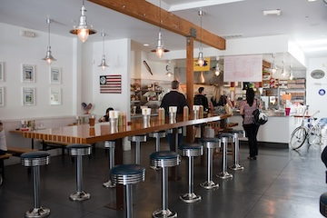
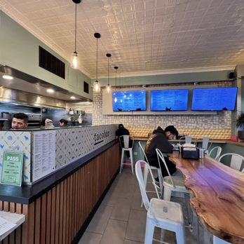
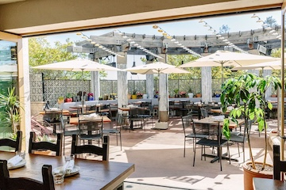

Rich, tasty, and authentic flavors are found all over Mexican restaurants in the Bay Area. Here are a few gems that are a MUST.

Tacko is a niche, well-run, flavorful restaurant. Located near Union Street in San Francisco, it's famous for its unique salsas and Nick's Way Crispy Tacos. It is themed like a Nantucket restaurant, hence the ACK in tACKo. If you've never been here, you're missing out.

Small, yet quick and delicious, Tacobar is the place to be. The service is top-notch, with food coming out in less than ten minutes. The tacos and burritos are piping hot and always seasoned to the max, not to mention great large orders perfect for a party or just a family dinner. It's well priced, tasty, and a great place for a quick bite.

Moving across the bride to Corte Madera in Marin County, we can enter Flores. Flores is high quality, has a great atmosphere, and has a beautiful interior. The food is always delectable and flavorful, and if you are in the area, you must stop by.
Home